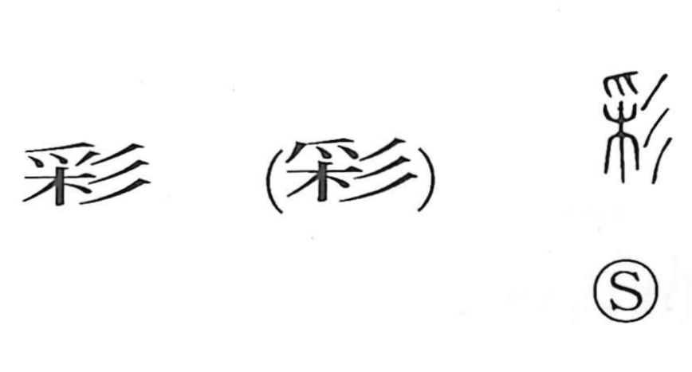

彩

Kun: irodoru, irodori, aya | On: sai
to color ・ coloring ・ pattern ・ brilliance
Explanation
Shirakawa reads 彩 as a picto-phonetic character formed with 采 as its core. The graph 采, which gives the on reading sai, depicts a hand—with the fingertips (爪)—reaching into a tree to pluck its seeds. From this act of taking from plants, 采 came to suggest drawing out hues, that is, coloring (irodori). To emphasize beauty, the sign 彡 is added, a mark of shimmering color and graceful form. Combined, they express irodoru: to apply color and create a lovely pattern (aya), a beautiful coloring.